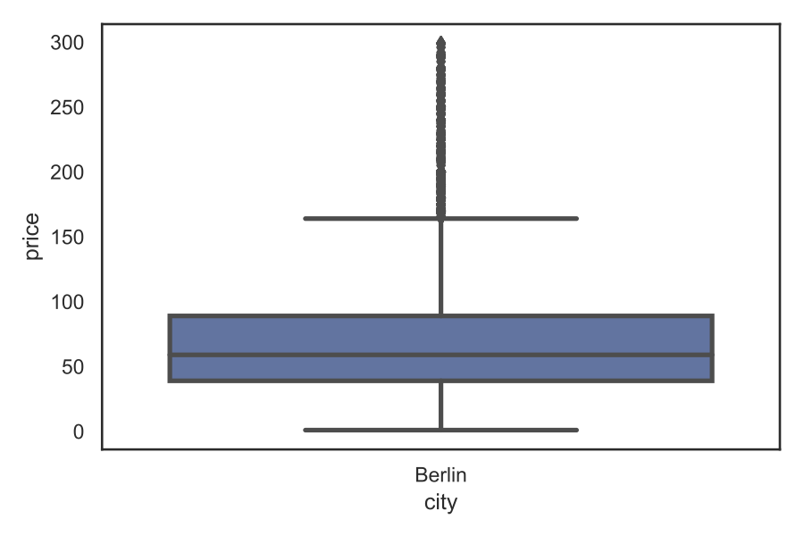
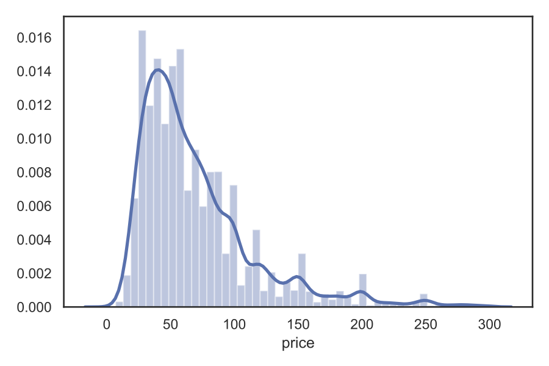
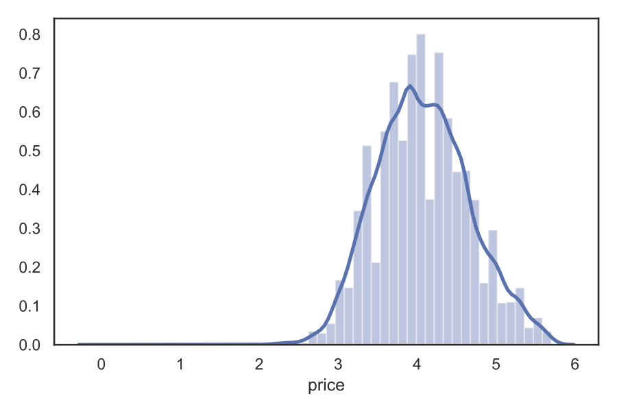
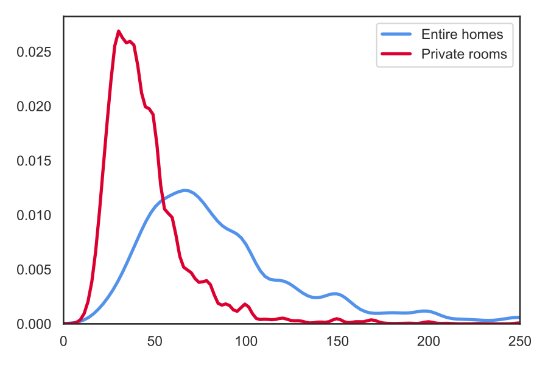
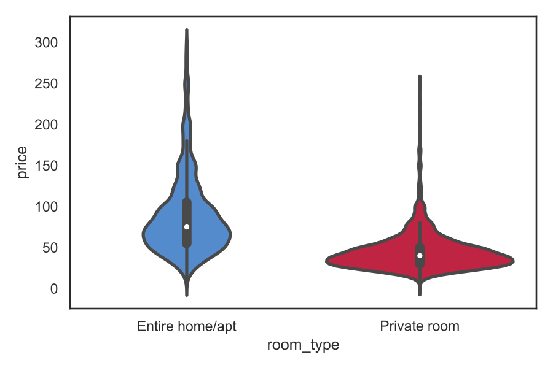
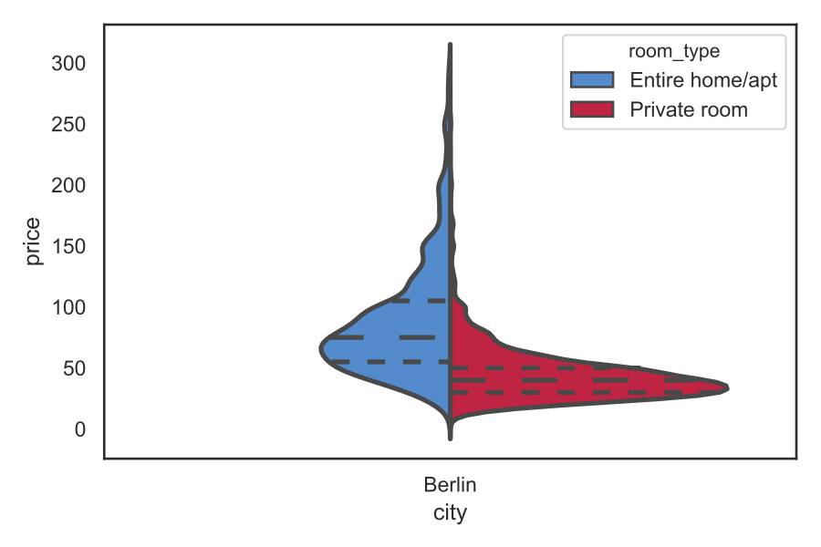
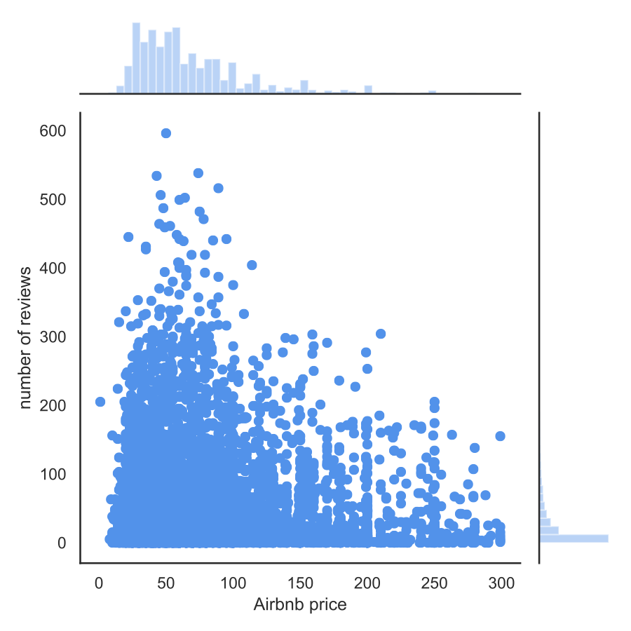
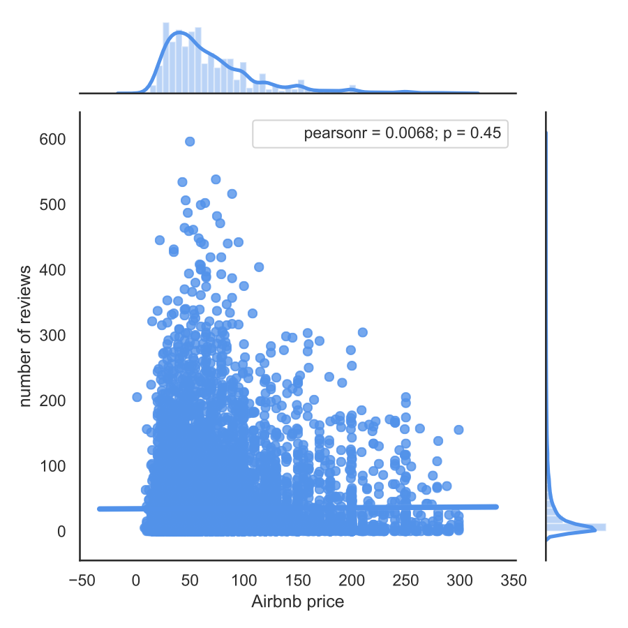

In this tutorial, we will go trough some simple data visualisations that you can perform as first steps to explore your dataset. We will use Airbnb data on Berlin from Inside Airbnb and examine:
- the histogram of price
- the distribution of price by listing type
- and the relationship between price and a listing attribute
We will use the following Python packages:
- Pandas for data management
- Numpy and Scipy for calculations
- Seaborn and Matplotlib for visualisations
First, let’s import the required packages: Airbnb data with pandas:
Importing and cleaning data
The data we will use is the Berlin dataset from November 2019 :Our dataset consists of 24586 rows (Airbnb offers) and 106 columns (variables). First, we should clean our data from offers that are not active any more, but are still available on the platform. Also, price is stored as string, while we need floats:
Price distribution
Now we can begin our analysis. First, let's quickly see the standard measures of the distribution:
The average (91) is much higher than the average (59), therefore we should see a price distribution with a long tail. The maximum value is almost 9000, therefore it makes sense to clean the data from outliers, e.g. cut off the top 2%. Also, we should filter the observations with 0 price. We can now visualise our dataset with a box-plot and histogram:The box-plot shows the value for the quartiles (the box), the distribution outside ("whiskers"), with outliers at the top.
Let’s examine the histogram of price.
Indeed, we have a population with a skewed distribution. If we take the logarithm of price, the distribution will be much closer to Gaussian:
In the graphs, two things are combined: the histogram and the smooth line that is the kernel density estimation (KDE) of the distribution. With KDE, we can easily compare the distribution of two populations, e.g. the different listing types. Let's divide our sample into entire homes and private rooms:
The figure reveal a clear segmentation: private rooms are much cheaper (median: 40) than entire homes (75).
A nice way to visualise distributions is the so-called violinplot: it takes the KDE of the population and presents it on the two sides of a box plot:
We can further condense the plot by splitting the two graphs and merging them into each other:
This way we have a clearer insight into the data from the box plot - the dashed lines provides the quartiles of the distribution (25th percentile, median, 75th percentile).
Relationship between variables
Finally, we can experiment with the relationship between price listing characteristics. As an example, we can examine if there is a relationship between price and the number of reviews:
The first figure shows our dataset by the two dimensions. Based on the pattern of points, we cannot see a robust relationship: most offers are characterised by a low number of reviews, but there seem to be no link to price. We can verify this by calculating Pearson's correlation coefficient and setting the regression line:
Conclusions
Before a deeper data analysis, it is essential to gain quick insights into the analysed dataset. The Seaborn package is a suitable tool to make the most out of our data with only a few lines of code. Moreover, the package is quite flexible with loads of customisation possibilities. This is a must in my data-science toolkit!